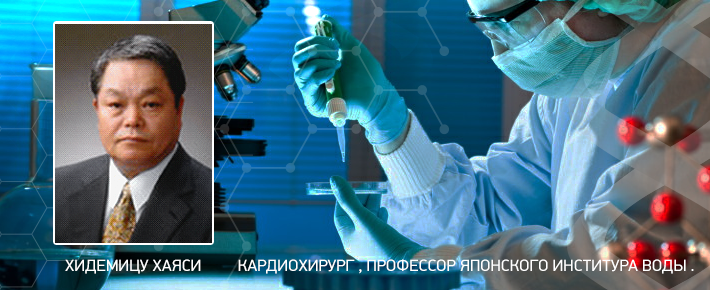

- главная
- наука о водороде
+ 7 (495) 64-111-63
info@vilovit.ru
Стержень Виловит® Источник Вашего Долголетия!
Наука о Водороде
Широкой аудитории известно о том, что организму нужен кислород. Однако мало кто проводит исследования воды, чтобы понять, насколько необходим для организма человека водород. На самом деле, наука уже не раз делала открытия связанные с водородом.
Научные открытия, связанные с водородом, поддерживают биологические принципы в таких обязательных процессах:
- Водород первый антиоксидант на нашей планете. Он действенен в снижении окисления, предупреждения заболеваний и замедления процесса старения.
- Водород содержится в 6 органах и играет особую роль в детоксикации. Это было доказано доктором Альбертом Сент – Дьерди (в 1937 году).
- Наука подтвердила, что водород является единственным элементом распознающим энергию организма. Он необходим для выработки жизненно важной АТФ (Аденозинтрифосфорной кислоты).
- Водород способен контролировать диабет (холестерин, повышенный сахар в крови), поэтому «Живая вода» полезна для людей, которые имеют заболевание сахарный диабет.
- Водород способен снизить вероятность сердечных и других дегенеративных заболеваний.
Нижеуказанные Нобелевские лауреаты своими открытиями подтверждают науку, ведущую к изобретению доктора Hidemitsu Hayashi (Хидемицу Хаяси). Японский профессор Хаяси создал недорогое и портативное изделие «ВилоВит». С помощью ВилоВит, любой человек без особого труда может получить для себя полезную терапию водородом.
Научные исследования связанные с водородом
Альберт Сент - Дьерди
Доктор Сент – Дьерди - это биохимик и биолог, который много исследовал организм человека. Именно он и открыл знаменитый «Витамин С», о котором знает каждый. За это открытие в 1937 году получил премию Альфреда Нобеля. В своем открытии он выявил следующее: водород - это единственный энергоноситель в организме, распознающий и описывающий природный процесс переваривания углеводов.
Из кандидатской Альберта Сент – Дьерди: «… тело человека знает исключительно один энергоноситель – водород. Продукты питания, содержащие углеводы, являются поставщиками водорода и главный процесс во время сгорания углеводов – это отщепление водорода. Его сгорание является энергоснабжающей реакцией. Изначально может показаться, что реакция проста, но мне пришлось посвятить все свои силы на ее изучение. Я работал над этим на протяжении последних пятнадцати лет».
Питер Митчелл - лауреат Нобелевской премии 1978
Нобелевская премия была присуждена доктору Питеру Митчеллу в 1978 году за его теорию о Хемиосмосе. Согласно этой модели, водород имеет важное значение в производстве АТФ в митохондриях, источник всей энергии в клетках, и поэтому источник энергии во всем теле. Она вырабатывается через дегидрогеназу водорода. Флавопротеидом катализировать превращение NAD+ к NADH путем молекулярного водорода (H2); H2 + NAD + → H + + NADH.
Эта основополагающая работа на производстве клеточной энергии, помогает объяснить востребованную энергию доступную из водородной воды с помощью ВилоВит.
В чем же суть структуры? Очевидно, производство АТФ может поддерживаться засчет увеличенного наличия молекулярного водорода, это и объясняет последовательно положительные отчеты, которые мы получаем от спортсменов, которые подтверждают значительное увеличение энергии.
Хидемицу Хаяси – кардиохирург и профессор Института Воды в Японии.
Благодаря профессору и кардиохирургу Х. Хаяси был разработан стержень «ВилоВит», позволяющий из обыкновенной воды произвести «Живую воду». Им был найден метод – вернуть водород в организм с помощью недорогостоящего для среднестатистического человека изделия.
Хидемицу Хаяси родился в 1938 году, после школы окончил медуниверситет (Япония, г.Кобе). В 1968 году начал учиться в Мюнхенском университете (1970-71). С 1985 года начал исследовать воду: ее полезность в медицине. В 1995 выпустил свою личную теорию относительно влияния воды, насыщенной антиоксидантом - водородом. В 2001 году создал чудо – разработку стержень «ВилоВит», который способен энергогенерировать воду и изготавливать «Живую воду».
В 1965 году Министерством Здравоохранения Японии было объявлено о необходимости водорода для баланса и поддержания пищеварительной флоры.
Лечение водородом в России
В 1988 году фармакологический комитет решил и узаконил свое решение о применении водорода в лечебных целях. Если быть точнее, то это произошло в бывшем СССР №211-2524/791 от 22 февраля. Изначально терапия водородом проводилась инъекционно и длилась длительное время (примерно два года), на него тратились огромные финансовые средства.
Сейчас мы можем использовать недорогое и простое изделие «ВилоВит» для проведения водородной терапии у себя дома.